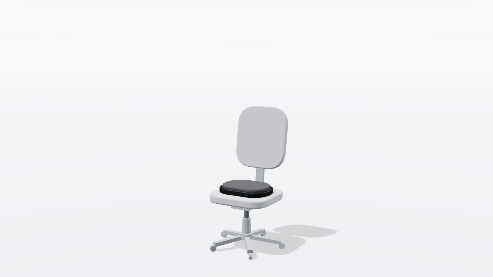
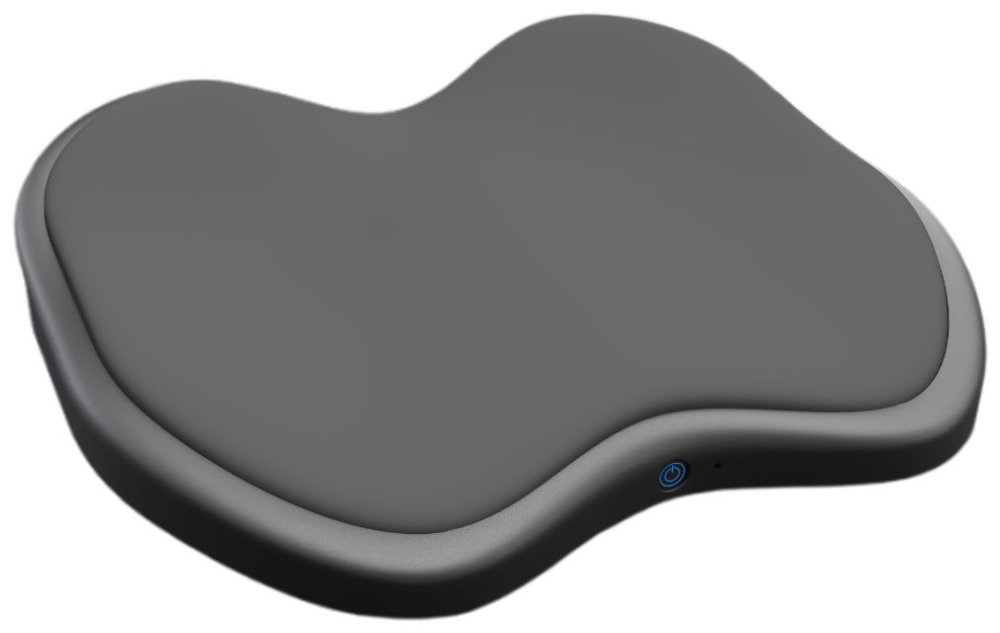
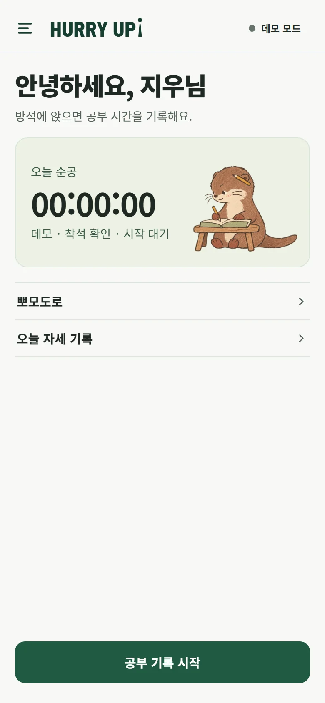
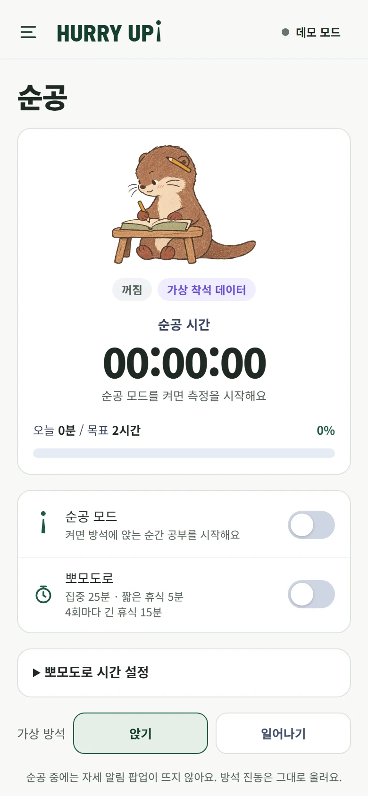
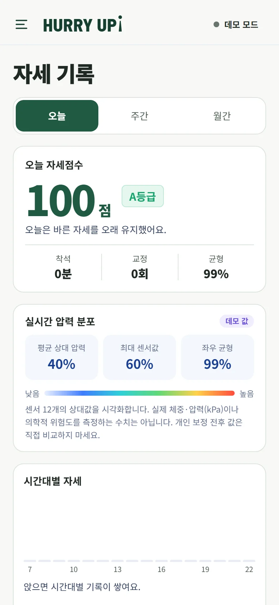
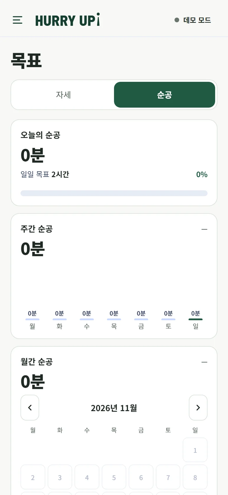
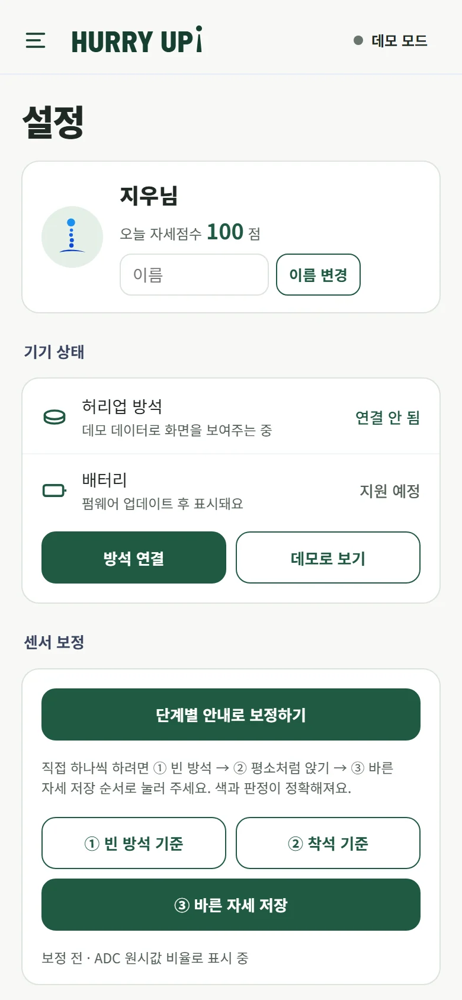

체압 감지
다중 압력센서가 엉덩이와 허벅지 쪽 하중을 계속 측정합니다.

스크롤하면 방석이 의자에서 떠올라 여섯 개의 레이어로 분리되는 개념 분해도가 재생됩니다: 01 폼 · 외피 커버, 02 압력센서 레이어, 03 진동 모터, 04 메인 제어 보드, 05 BLE 통신, 06 배터리 · 전원. 부품과 수치는 시제품 검증을 거쳐 정합니다.
HURRY UP · SMART POSTURE CUSHION
대부분의 방석은 받쳐 줄 뿐입니다. HURRY UP은 자세를 알려 줍니다.
다중 압력센서가 엉덩이와 허벅지 쪽 하중을 계속 측정합니다.
좌우·앞뒤 쏠림이 일정 시간 이어질 때만 알림 대상으로 판정합니다. 잠깐의 뒤척임은 걸러냅니다.
은은한 진동으로 알리고, 하중이 고르게 돌아오면 멈춥니다.
INTERACTIVE DEMO
SIM화면의 수치는 모두 예시 데이터입니다. 실제 측정값이 아니며, 12점 센서 배열과 알림 기준은 시연용 콘셉트입니다.
TOP VIEW예시 데이터 · 실제 측정값 아님

S1–S12압력 센서 레이어 · 좌판 내부
PWR전원 버튼
착석 자세
‘오른쪽 쏠림’을 눌러 체압과 진동 알림 상태가 어떻게 달라지는지 확인해 보세요.
균형 유지
좌우 하중이 고르게 나뉘어 있어요
좌우 하중L : R
좌50:50우
진동 알림HAPTIC · SIM
진동 알림 · 대기
편향 지속00:00.0
편향이 1.5초 이어지면 작동, 고르게 돌아오면 멈춤
좌우 편향 추이0
최근 12초 · 음영 = 알림 판정 구간 (±12%p)R ↑ L ↓
세부 수치
구역 평균현재 · 균형 착석
PROTOTYPE시제품 구성 — 첫 화면의 분해도는 구성을 설명하는 개념도이며, 부품과 수치는 시제품 검증을 거쳐 정합니다.





단계별 상태는 잠정이며, 확인되는 대로 업데이트합니다.
USB-C로 충전하는 방식으로 설계하고 있습니다. 배터리 용량과 사용 시간은 시제품 검증을 마친 뒤 안내하겠습니다.
지퍼로 분리하는 커버로 설계하고 있습니다. 전자 부품을 빼낸 뒤 커버만 세탁하는 구조입니다.
앉은 사람만 느낄 정도의 짧은 진동을 내도록 저소음 모터를 고르고 있습니다. 소음은 아직 측정하지 않았습니다.
방석만으로 감지하고 진동하도록 설계하고 있습니다. 앱은 기록 확인과 설정에 씁니다.
현재 하드웨어 프로토타입을 개발하고 있으며, 인증 준비와 출시 일정은 아직 정해지지 않았습니다.